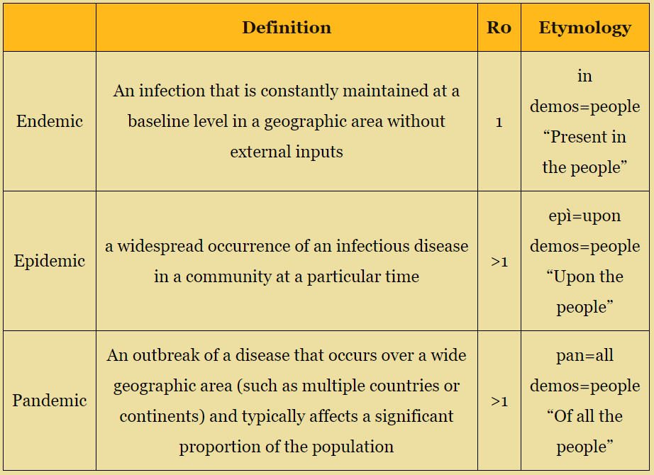
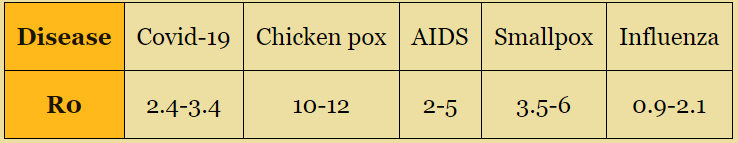

Factors of expansion and explanation of the simulation

We have often heard the term “pandemic” used to refer to Covid-19, but what does this word effectively mean?
A pandemic is defined as an epidemic occurring worldwide, or over a very wide area, crossing international boundaries and usually
affecting a large number of people.
It is difficult to generalize the expansion of a pandemic, given the vast multitude of factors that vary in relation to the social,
political and historical context, without counting characteristics of the pathogen itself.
So many are the variables that there is a whole field of study, epidemiology, that studies the patterns and determinants of health
and disease conditions.
That being said, this article and the simulations presented attempt to explain a pandemic in very general terms, occasionally drawing conclusions from mathematical models, that will never be able to simulate the complexity of a real epidemic.
Let’s start with a simple simulation. In a population(in our case represented by a set of colored dots), a disease starts to spread.

Even if a single person is initially infected, it can rapidly spread to the rest of the population. In the diagram above,
each infected person spreads the disease to a few other people.
In this case, the average number of people infected has been fixed to two, but this number will vary based on the disease and on
the population studied.
This index is known as the basic reproductive number (R0), and is very important in the study of epidemics. In fact, R0 is at the
base of the very definition of epidemic. In epidemiology, to be classified as an epidemic, R0 must be higher than 1. If it’s equal
to 1, it is considered an endemic.
When in an endemic state, the disease won’t spread exponentially, however it won’t die out either, remaining present in the
local population.
For example, chicken pox is endemic in the United Kingdom.

The R0 values of some well known diseases

Exactly how fast do epidemics grow?
New cases stem from the current ones, so the more current cases there are, the more the infection will spread. If graphed, the
total number of cases would take the form of an exponential curve.
Our graph isn’t correct however, at least not yet. We have yet to account for one important factor, and that is, the fact that
epidemics can’t grow indefinitely. Sooner or later, all the population will be infected, and there will be no new cases.
It might seem strange to have the cases gradually grow, only to have them abruptly drop to 0, and in fact, that isn’t quite the case.
You mustn't wait till the end of an epidemic to notice a change in the growth of the disease.
As more people get infected, it will become impossible for an infected person to run into the same number of healthy people they
would encounter in a completely susceptible population.
Therefore, the resulting graph isn’t an exponential one, but a logistic one. Here we have a first set of interactive simulations. You can use the sliders to vary the characteristics of the epidemic, while the graph displays the progression of the contagion over time.
From now on susceptible people will be indicated in green, while infected people will be in red.
The cases grow rapidly for a period of time, to then reach an inflection point, and from then on the cases still grow, but not as quickly.
We can redefine our basic reproduction number R0 with the following definition: the average number of people infected by a contagious person
in a completely susceptible population.
Furthermore, we can introduce a second number, the effective reproductive number (R) , that indicates the actual average number of healthy
people infected by each contagious person. This second value will vary in the course of an epidemic.